MUTP · travelling perspective camera
The selected default is 40° end-on perspective with zero yaw. A top-down tactical view is available for crowded scrums, with square cells, parallel edges and no vanishing point. Both scroll north–south along the pitch; the viewer's toggle retains the current camera position and coach end.
In perspective, pitch edges and crowd rails converge toward the same vanishing point on screen. The camera travels with a fixed height, angle and lens. Turf, players, crowd and stands follow the active camera; the approved HUD stays fixed.
A square at the same distance from the viewer keeps the same apparent size wherever the camera travels. Each view retains the same exact 26 × 15 pitch: 390 squares, end zones, 4 / 7 / 4 divisions, and 22 players centered by their feet in perspective and by their visible artwork in top-down view. The earlier approved stadium artwork is reused; the modular v3 stands are removed.
The revised HUD shows available resources with hover tooltips, clocks beside the team names, player details on hover above chat or the log, a compact Other action tray, a wider event log with three font sizes and bottom-left Enter-to-chat. The reference toolbar can be hidden during UI review. Open the viewer to try these controls, or inspect the player hover card and resource tooltip. HUD notes describe the local examples and new reroll artwork.


Approved default · 40° perspective · zero yaw

Home coach

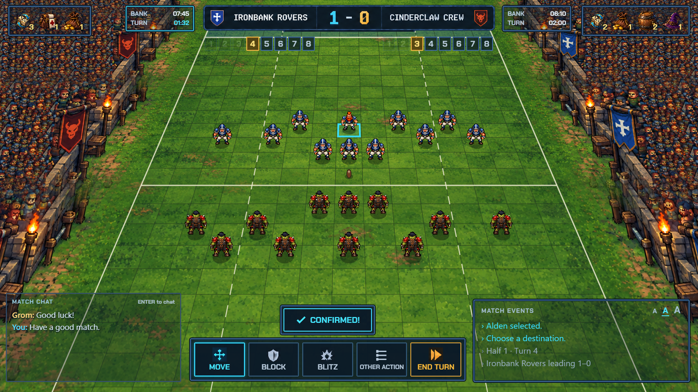
Away coach
Top-down tactical view · 90° orthographic
Equal square sizes throughout, with the same north–south scrolling.

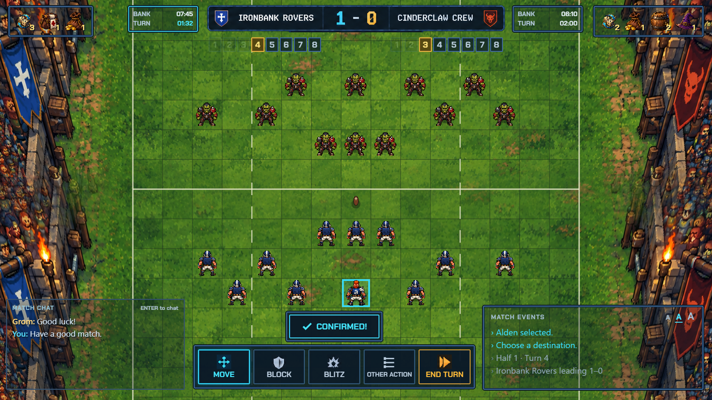
Home coach

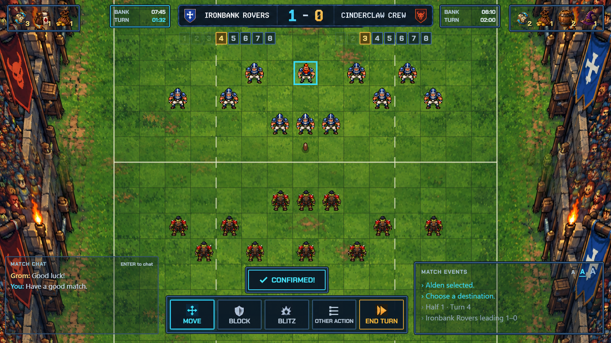
Away coach
30° and 50° follow-up views

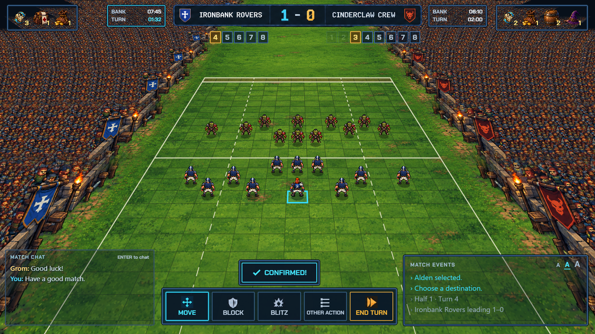

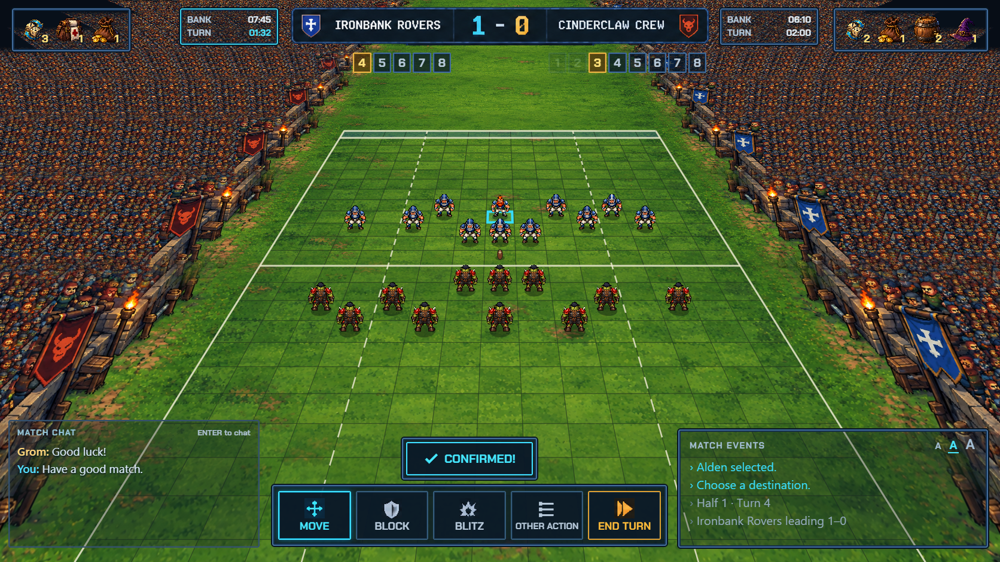

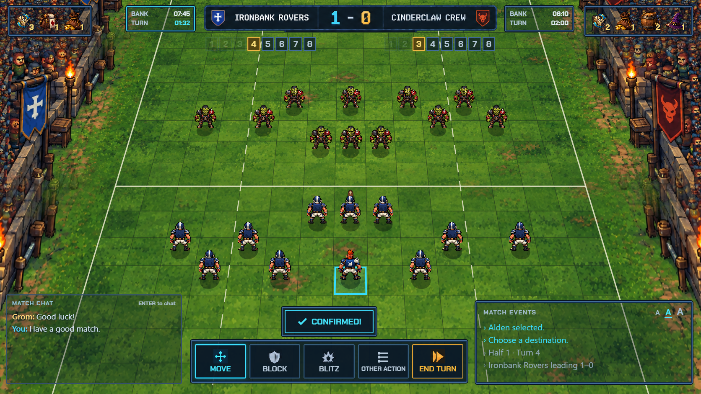

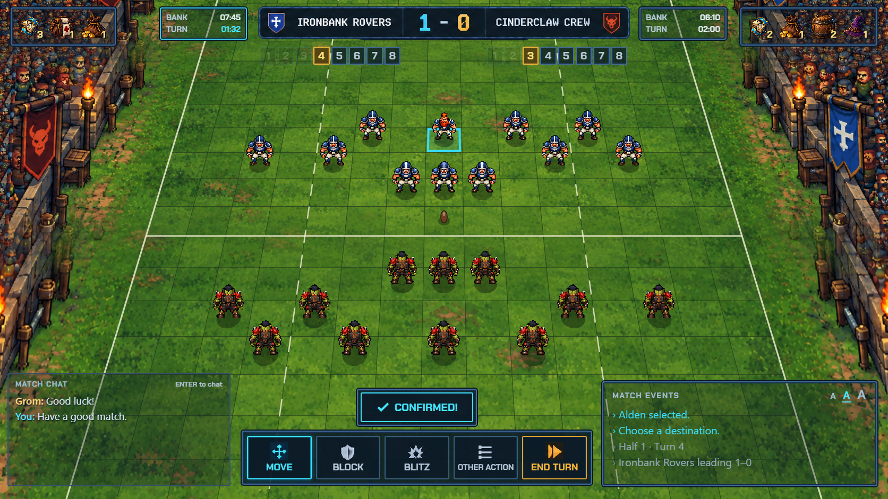
35° elevation · lower comparison

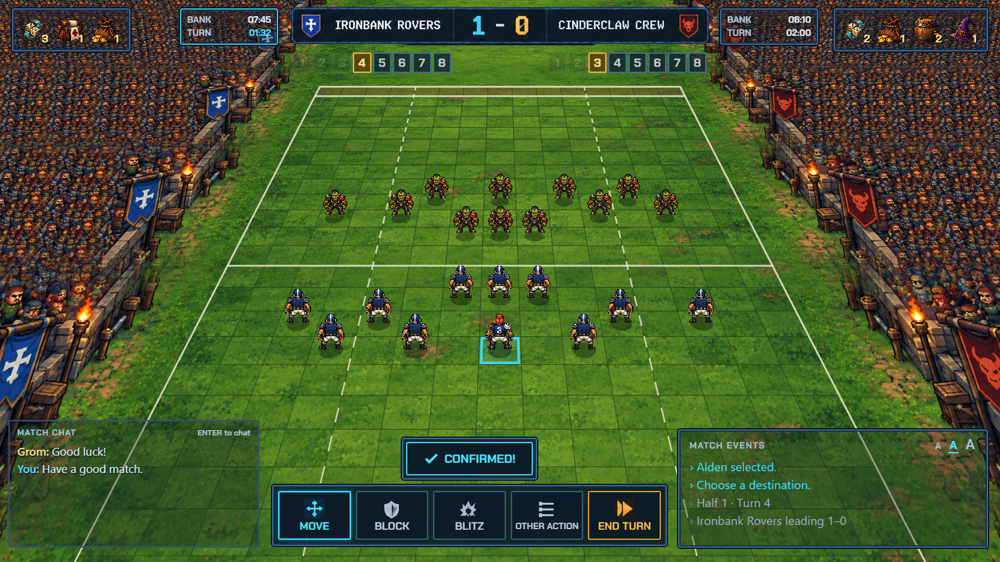
Home coach

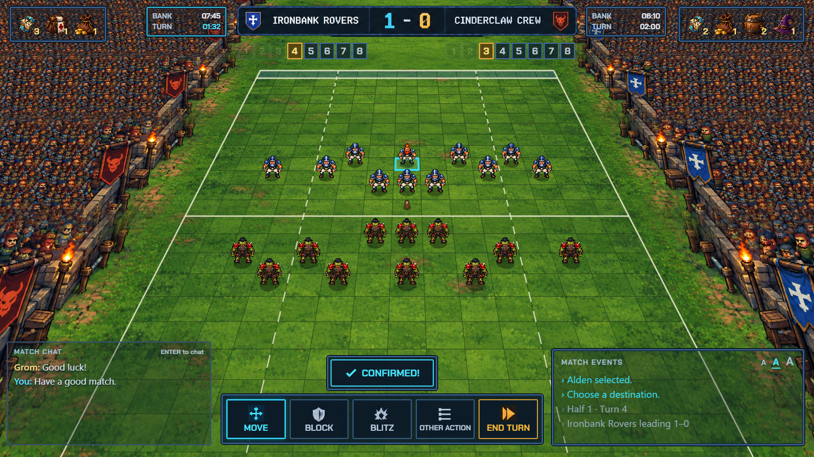
Away coach
55° elevation · restored earlier composition

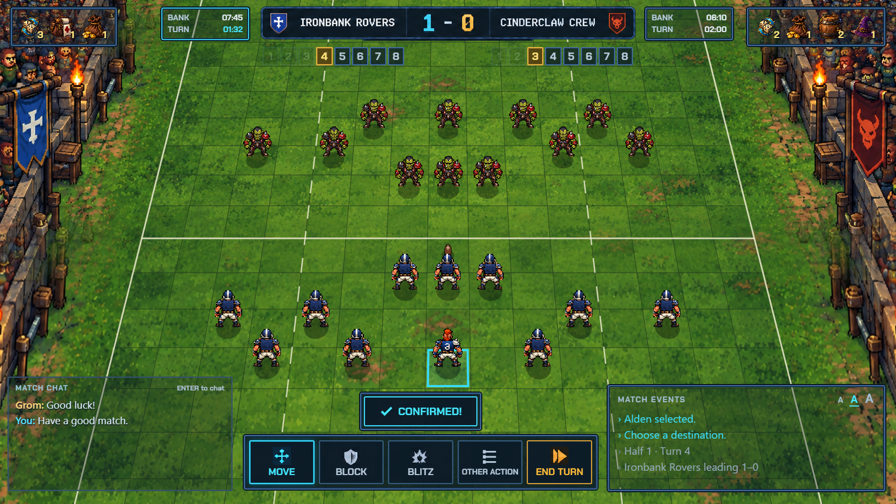
Home coach

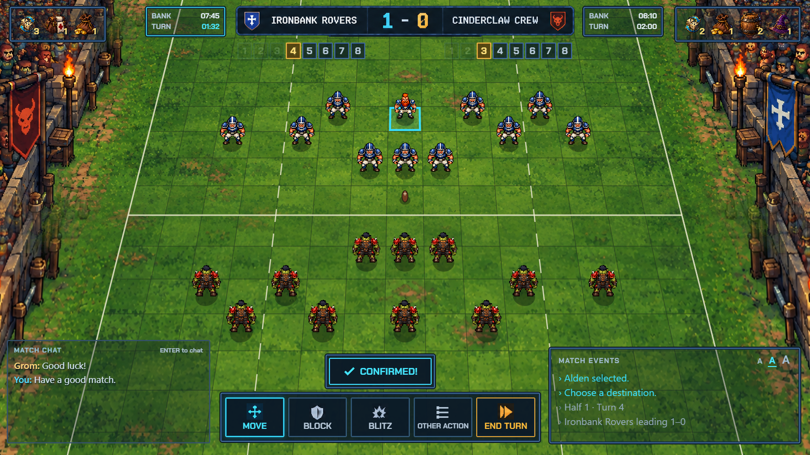
Away coach
The entire pitch moves
These 40° home-view captures show the near and far ends. Use the live viewer to follow a grass patch, torch or banner as its distance and apparent size change with camera travel. The HUD remains in the same screen position.

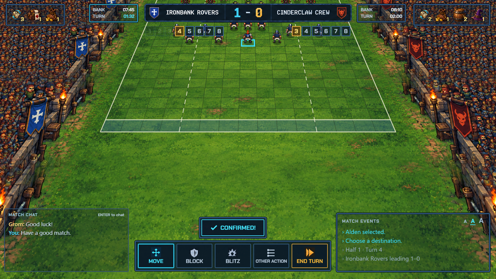
Near end · canonical x=0

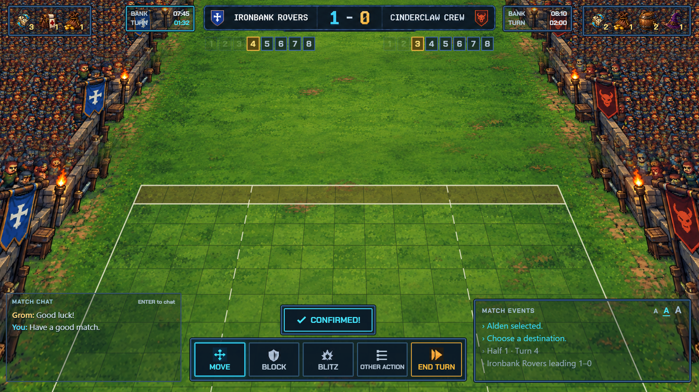